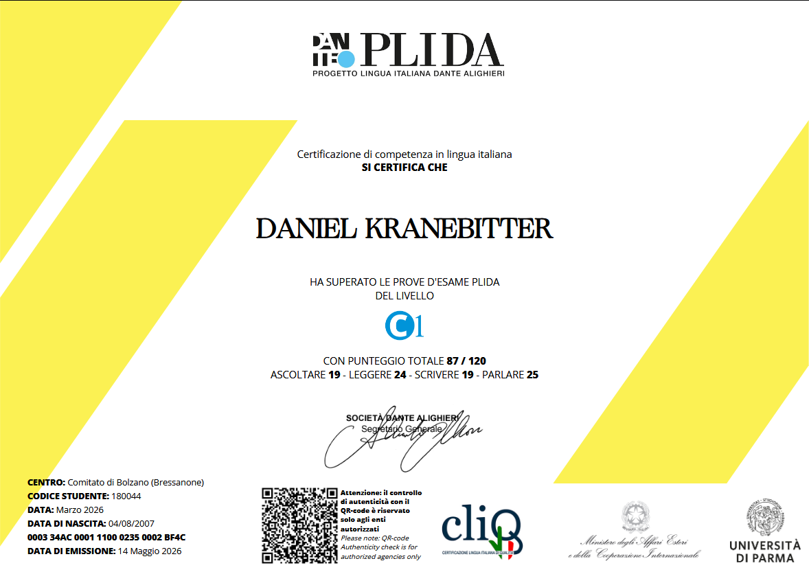

Das PLIDA-Zertifikat (Progetto Lingua Italiana Dante Alighieri) bestätigt Sprachkompetenzen im Italienischen nach dem Gemeinsamen Europäischen Referenzrahmen (GER), von A1 bis C2.
Ich habe die Prüfung auf Niveau C1 erfolgreich abgeschlossen und damit meine fortgeschrittenen Kenntnisse in Sprache, Verständnis und Ausdruck offiziell nachgewiesen. Seitdem habe ich meine Italienischkenntnisse weiter ausgebaut und bewege mich inzwischen nahe am C2-Niveau.
Zertifikat ansehen / herunterladen